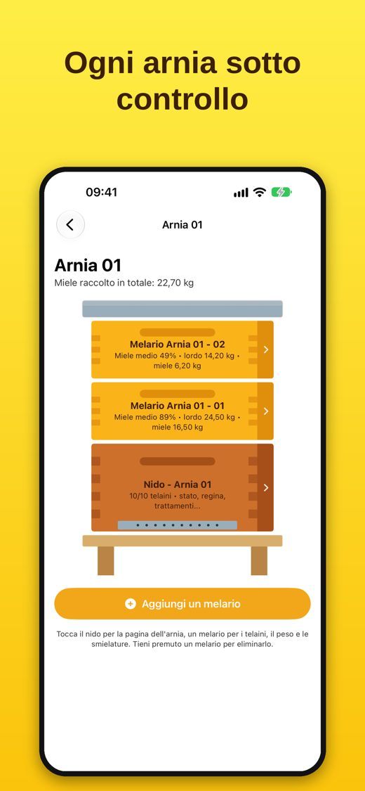
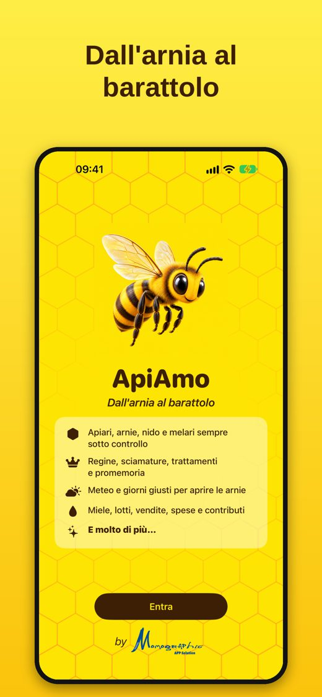
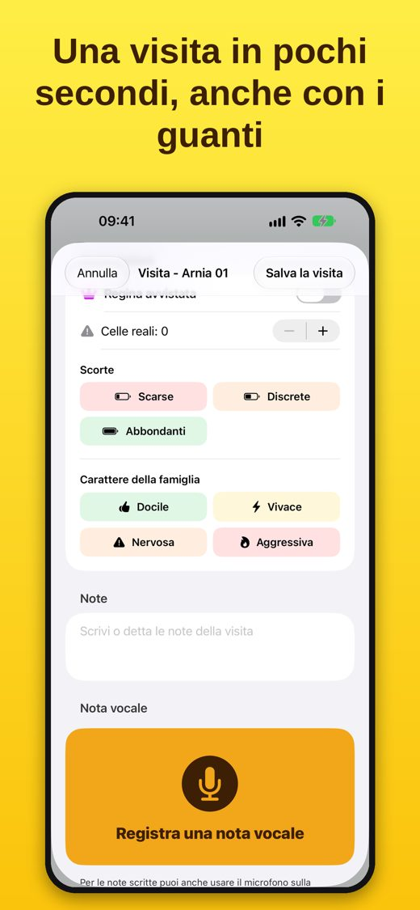
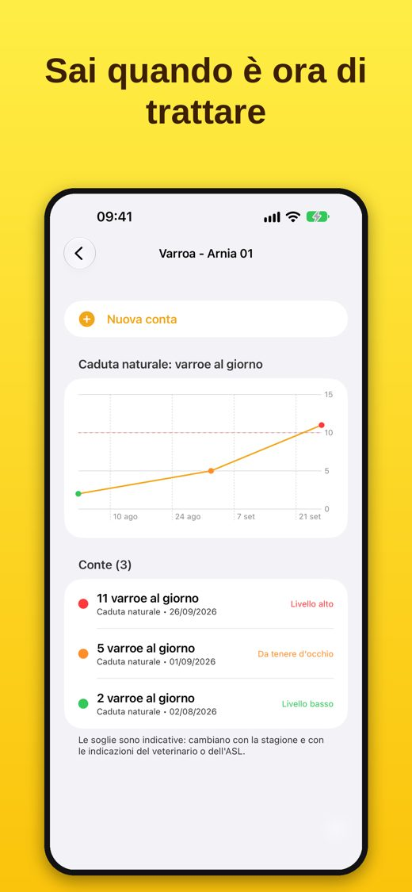
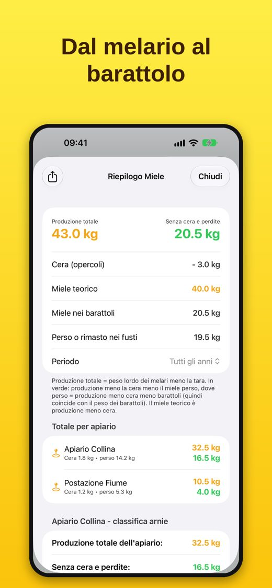
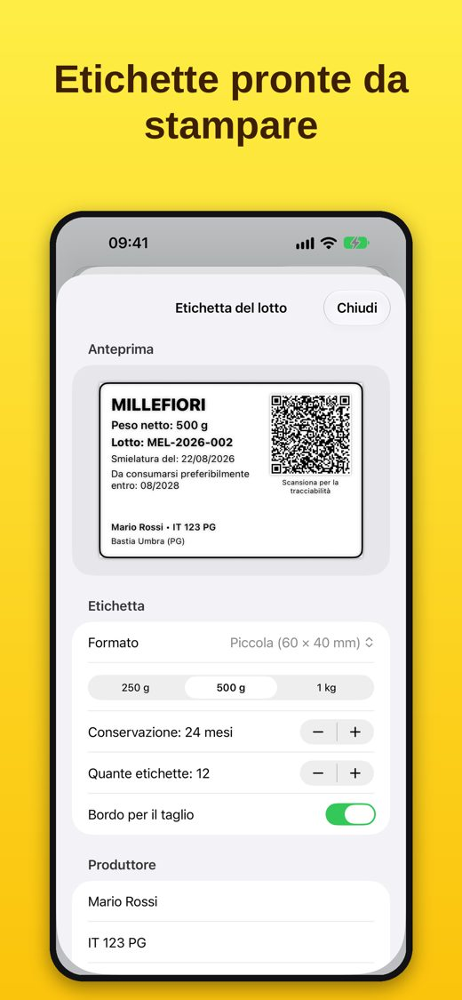
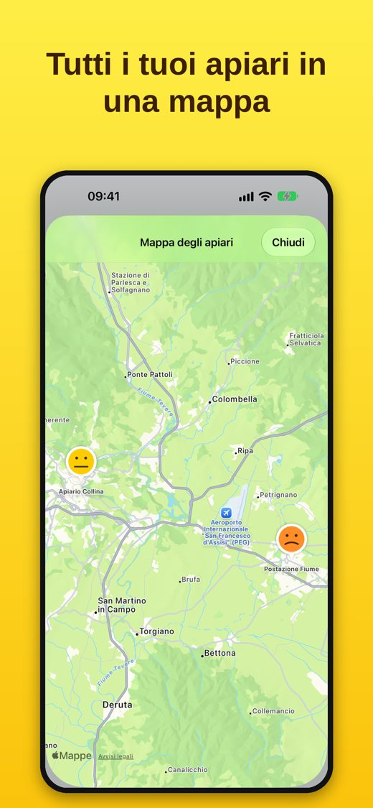
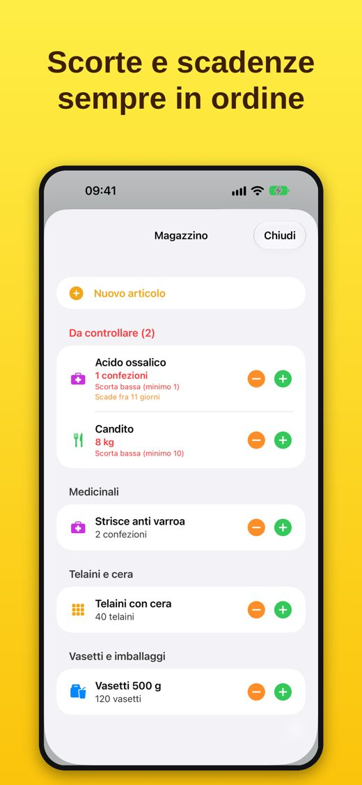
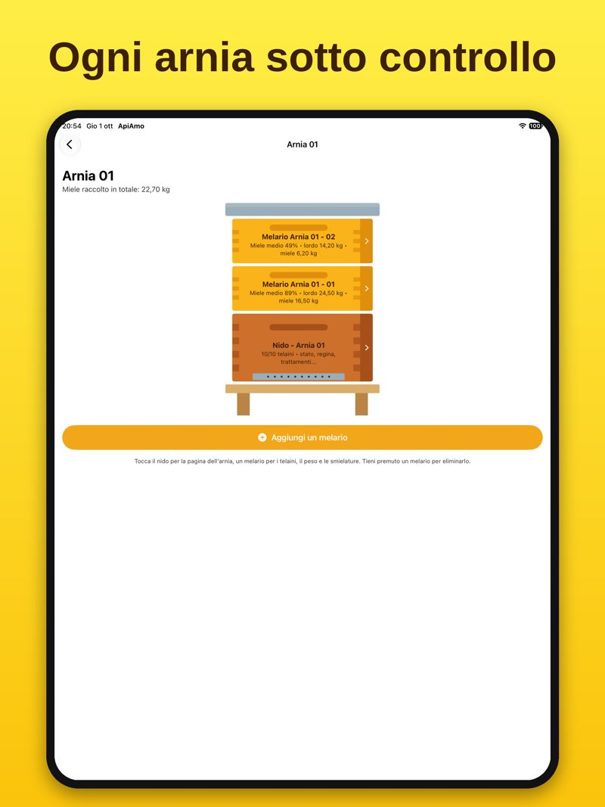
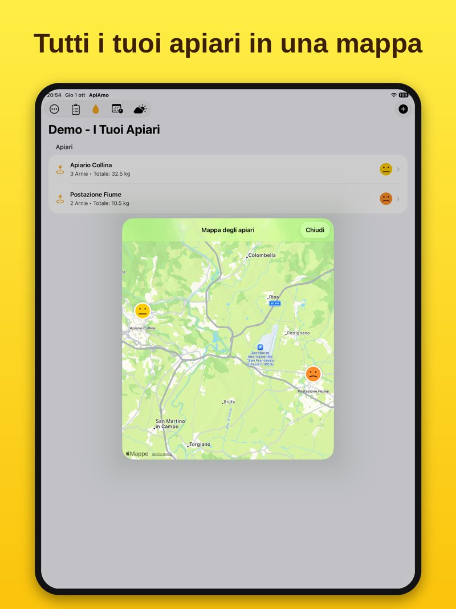

ApiAmo
Dall'arnia al barattolo
Il quaderno digitale dell'apicoltore. Segui ogni arnia, registra le visite in pochi secondi anche con i guanti, tieni d'occhio varroa e trattamenti, e porta il tuo miele fino all'etichetta. Tutto sul tuo iPhone e iPad, senza account e senza abbonamenti.
Gratis da scaricare · prova con 1 apiario e 3 arnie · sblocco completo con un unico acquisto

Inquadra con il telefono per scaricare
Com'è fatta







Cosa puoi fare con ApiAmo
Apiari e mappa
Tutti i tuoi apiari su una mappa, ognuno con la faccina che ne riassume la salute, la scheda con i codici e i documenti.
Arnie, telaini e melari
Il nido con i suoi telaini (covata, miele, polline…) e i melari con la pesatura: vedi l'arnia come è davvero.
Visite in pochi secondi
Stato con una faccina, regina, celle reali, scorte e carattere della famiglia. Foto, note scritte o dettate e note vocali.
Varroa e trattamenti
Conte della varroa con grafico e avviso, trattamenti con lotto, scadenza e documenti del medicinale.
Regine, nutrizione, sciamature
Età e colore di marcatura della regina, razza e allevatore, nutrizione con le quantità, sciami che diventano nuove arnie.
Promemoria e meteo
Agenda con notifiche e avvisi automatici; previsioni di ogni apiario con i giorni adatti alla visita.
Miele, lotti ed etichette
Smielature, lotti, vendite in vasetti e clienti. Etichette con QR code pronte da stampare.
Conti e magazzino
Spese, contributi e ricavi con il riepilogo; scorte minime e scadenze di medicinali, candito e vasetti.
I tuoi dati restano tuoi
Niente account e niente pubblicità: i dati stanno sul tuo dispositivo, con backup completo e blocco con Face ID.
Come si usa
- Scarica ApiAmo e tocca «Entra».
- Tocca «Aggiungi apiario», poi apri l'apiario e tocca «Aggiungi arnia».
- Apri l'arnia e tocca il nido: trovi stato, telaini, visite, varroa, trattamenti, regina e promemoria.
- Dal menu ⋯ in alto a destra trovi mappa, miele e lotti, spese e ricavi, grafici, magazzino e backup.
- Vuoi solo dare un'occhiata? Apri la «Demo guidata» dal menu ⋯: ti mostra tutto con dati di esempio.
Prezzo
ApiAmo si scarica gratis e si può provare con 1 apiario e 3 arnie, con tutte le funzioni. Con un unico acquisto, senza abbonamento, togli ogni limite per sempre.
Per iPhone e iPad
Funziona da iOS 17, su iPhone e iPad (su iPad testi e tasti sono più grandi, comodi anche con i guanti). Disponibile in italiano, inglese, francese, spagnolo, tedesco, rumeno e greco.


ApiAmo
From hive to jar
The beekeeper's digital notebook. Follow every hive, record visits in seconds even with gloves on, keep an eye on varroa and treatments, and take your honey all the way to the label. All on your iPhone and iPad, with no account and no subscription.
Free to download · try it with 1 apiary and 3 hives · full unlock with a one-time purchase
Scan with your phone to download
Take a look
What you can do with ApiAmo
Apiaries and map
All your apiaries on a map, each with a face summarising its health, plus a record card with codes and documents.
Hives, frames and supers
The brood box with its frames (brood, honey, pollen…) and the honey supers with their weights: see each hive as it really is.
Visits in seconds
Status with a face, queen, queen cells, stores and temperament. Photos, typed or dictated notes and voice notes.
Varroa and treatments
Varroa counts with a chart and alerts; treatments with batch, expiry date and medicine documents.
Queens, feeding, swarms
Queen age and marking colour, breed and breeder, feeding with quantities, swarms that become new hives.
Reminders and weather
Agenda with notifications and automatic alerts; forecasts for each apiary with the best days for a visit.
Honey, lots and labels
Harvests, lots, sales by jar and customers. Labels with QR codes, ready to print.
Accounts and inventory
Expenses, grants and income with a summary; minimum stock and expiry dates for medicines, fondant and jars.
Your data stays yours
No account and no ads: data stays on your device, with full backups and an optional Face ID lock.
How it works
- Download ApiAmo and tap “Enter”.
- Tap “Add apiary”, then open the apiary and tap “Add hive”.
- Open the hive and tap the brood box: you'll find status, frames, visits, varroa, treatments, queen and reminders.
- The ⋯ menu at the top right contains the map, honey and lots, expenses and revenue, charts, inventory and backup.
- Just want a look? Open the “Guided demo” from the ⋯ menu: it shows everything with sample data.
Price
ApiAmo is free to download and you can try it with 1 apiary and 3 hives, with every feature. A single purchase, with no subscription, removes all limits forever.
For iPhone and iPad
Works from iOS 17 on iPhone and iPad (on iPad, text and buttons are bigger, easy to use even with gloves). Available in Italian, English, French, Spanish, German, Romanian and Greek.
ApiAmo
De la ruche au pot
Le carnet numérique de l'apiculteur. Suivez chaque ruche, enregistrez vos visites en quelques secondes même avec des gants, surveillez varroa et traitements, et menez votre miel jusqu'à l'étiquette. Tout sur votre iPhone et iPad, sans compte et sans abonnement.
Téléchargement gratuit · essai avec 1 rucher et 3 ruches · déblocage complet par un achat unique
Scannez avec votre téléphone pour télécharger
Aperçu
Ce que vous pouvez faire avec ApiAmo
Ruchers et carte
Tous vos ruchers sur une carte, chacun avec un visage qui résume sa santé, et une fiche avec codes et documents.
Ruches, cadres et hausses
Le corps de ruche avec ses cadres (couvain, miel, pollen…) et les hausses avec leur pesée : voyez chaque ruche telle qu'elle est.
Visites en quelques secondes
État avec un visage, reine, cellules royales, réserves et caractère de la colonie. Photos, notes écrites ou dictées et notes vocales.
Varroa et traitements
Comptages de varroa avec graphique et alerte ; traitements avec lot, date d'expiration et documents du médicament.
Reines, nourrissement, essaims
Âge et couleur de marquage de la reine, race et éleveur, nourrissement avec les quantités, essaims qui deviennent de nouvelles ruches.
Rappels et météo
Agenda avec notifications et alertes automatiques ; prévisions de chaque rucher avec les jours propices à la visite.
Miel, lots et étiquettes
Extractions, lots, ventes par pots et clients. Étiquettes avec QR code prêtes à imprimer.
Comptes et stock
Dépenses, aides et recettes avec récapitulatif ; stocks minimum et dates d'expiration des médicaments, du candi et des pots.
Vos données restent à vous
Ni compte ni publicité : les données restent sur votre appareil, avec sauvegarde complète et verrouillage Face ID.
Comment l'utiliser
- Téléchargez ApiAmo et touchez « Entrer ».
- Touchez « Ajouter un rucher », ouvrez le rucher et touchez « Ajouter une ruche ».
- Ouvrez la ruche et touchez le corps : vous y trouvez état, cadres, visites, varroa, traitements, reine et rappels.
- Le menu ⋯ en haut à droite contient la carte, miel et lots, dépenses et recettes, graphiques, stock et sauvegarde.
- Juste pour voir ? Ouvrez la « Démo guidée » depuis le menu ⋯ : elle montre tout avec des données d'exemple.
Prix
ApiAmo se télécharge gratuitement et peut être essayée avec 1 rucher et 3 ruches, avec toutes les fonctions. Un achat unique, sans abonnement, supprime toutes les limites pour toujours.
Pour iPhone et iPad
Fonctionne à partir d'iOS 17, sur iPhone et iPad (sur iPad, textes et boutons sont plus grands, pratiques même avec des gants). Disponible en italien, anglais, français, espagnol, allemand, roumain et grec.
ApiAmo
De la colmena al tarro
El cuaderno digital del apicultor. Sigue cada colmena, registra las visitas en pocos segundos incluso con guantes, vigila la varroa y los tratamientos, y lleva tu miel hasta la etiqueta. Todo en tu iPhone y iPad, sin cuenta y sin suscripción.
Descarga gratuita · prueba con 1 colmenar y 3 colmenas · desbloqueo completo con una sola compra
Escanea con tu teléfono para descargar
Así es
Qué puedes hacer con ApiAmo
Colmenares y mapa
Todos tus colmenares en un mapa, cada uno con una carita que resume su salud, y una ficha con códigos y documentos.
Colmenas, cuadros y alzas
La cámara de cría con sus cuadros (cría, miel, polen…) y las alzas con su pesaje: ve cada colmena tal como es.
Visitas en segundos
Estado con una carita, reina, celdas reales, reservas y carácter de la familia. Fotos, notas escritas o dictadas y notas de voz.
Varroa y tratamientos
Conteos de varroa con gráfico y aviso; tratamientos con lote, caducidad y documentos del medicamento.
Reinas, alimentación, enjambres
Edad y color de marcado de la reina, raza y criador, alimentación con cantidades, enjambres que se convierten en nuevas colmenas.
Recordatorios y tiempo
Agenda con notificaciones y avisos automáticos; previsión de cada colmenar con los días adecuados para la visita.
Miel, lotes y etiquetas
Cosechas, lotes, ventas por tarros y clientes. Etiquetas con código QR listas para imprimir.
Cuentas y almacén
Gastos, ayudas e ingresos con resumen; existencias mínimas y caducidades de medicamentos, candi y tarros.
Tus datos son tuyos
Sin cuenta y sin publicidad: los datos se quedan en tu dispositivo, con copia completa y bloqueo con Face ID.
Cómo se usa
- Descarga ApiAmo y toca «Entrar».
- Toca «Añadir colmenar», abre el colmenar y toca «Añadir colmena».
- Abre la colmena y toca la cámara de cría: encontrarás estado, cuadros, visitas, varroa, tratamientos, reina y recordatorios.
- El menú ⋯ arriba a la derecha contiene el mapa, miel y lotes, gastos e ingresos, gráficos, almacén y copias de seguridad.
- ¿Solo quieres echar un vistazo? Abre la «Demo guiada» desde el menú ⋯: lo muestra todo con datos de ejemplo.
Precio
ApiAmo se descarga gratis y se puede probar con 1 colmenar y 3 colmenas, con todas las funciones. Con una sola compra, sin suscripción, quitas todos los límites para siempre.
Para iPhone y iPad
Funciona desde iOS 17, en iPhone y iPad (en iPad textos y botones son más grandes, cómodos incluso con guantes). Disponible en italiano, inglés, francés, español, alemán, rumano y griego.
ApiAmo
Von der Beute ins Glas
Das digitale Notizbuch des Imkers. Behalte jede Beute im Blick, erfasse Durchsichten in Sekunden auch mit Handschuhen, beobachte Varroa und Behandlungen und bring deinen Honig bis aufs Etikett. Alles auf iPhone und iPad, ohne Konto und ohne Abo.
Kostenlos laden · Test mit 1 Bienenstand und 3 Beuten · volle Freischaltung mit einem einmaligen Kauf
Mit dem Handy scannen und laden
So sieht es aus
Was du mit ApiAmo machen kannst
Bienenstände und Karte
Alle Bienenstände auf einer Karte, jeder mit einem Gesicht für seinen Zustand, dazu ein Datenblatt mit Nummern und Dokumenten.
Beuten, Rähmchen und Honigräume
Der Brutraum mit seinen Rähmchen (Brut, Honig, Pollen…) und die Honigräume mit Wägung: jede Beute, wie sie wirklich ist.
Durchsicht in Sekunden
Zustand mit einem Gesicht, Königin, Weiselzellen, Vorräte und Sanftmut. Fotos, geschriebene oder diktierte Notizen und Sprachnotizen.
Varroa und Behandlungen
Varroa-Zählungen mit Diagramm und Warnung; Behandlungen mit Charge, Ablaufdatum und Unterlagen des Mittels.
Königinnen, Fütterung, Schwärme
Alter und Zeichenfarbe der Königin, Rasse und Züchter, Fütterung mit Mengen, Schwärme, die zu neuen Beuten werden.
Erinnerungen und Wetter
Kalender mit Mitteilungen und automatischen Hinweisen; Vorhersage für jeden Stand mit den besten Tagen für eine Durchsicht.
Honig, Chargen und Etiketten
Ernten, Chargen, Verkäufe nach Gläsern und Kunden. Etiketten mit QR-Code, druckfertig.
Finanzen und Lager
Ausgaben, Zuschüsse und Einnahmen mit Übersicht; Mindestbestände und Ablaufdaten für Mittel, Futterteig und Gläser.
Deine Daten bleiben deine
Kein Konto, keine Werbung: die Daten bleiben auf deinem Gerät, mit vollständigem Backup und Face-ID-Sperre.
So funktioniert es
- Lade ApiAmo und tippe auf „Eintreten“.
- Tippe auf „Bienenstand hinzufügen“, öffne den Stand und tippe auf „Beute hinzufügen“.
- Öffne die Beute und tippe auf den Brutraum: dort findest du Zustand, Rähmchen, Durchsichten, Varroa, Behandlungen, Königin und Erinnerungen.
- Im Menü ⋯ oben rechts findest du Karte, Honig und Chargen, Ausgaben und Einnahmen, Diagramme, Lager und Backup.
- Nur mal schauen? Öffne die „Geführte Demo“ im Menü ⋯: sie zeigt alles mit Beispieldaten.
Preis
ApiAmo ist kostenlos und lässt sich mit 1 Bienenstand und 3 Beuten mit allen Funktionen testen. Ein einmaliger Kauf, ohne Abo, hebt alle Grenzen für immer auf.
Für iPhone und iPad
Läuft ab iOS 17 auf iPhone und iPad (auf dem iPad sind Texte und Tasten größer, bequem auch mit Handschuhen). Verfügbar auf Italienisch, Englisch, Französisch, Spanisch, Deutsch, Rumänisch und Griechisch.
ApiAmo
De la stup la borcan
Caietul digital al apicultorului. Urmărește fiecare stup, înregistrează vizitele în câteva secunde chiar și cu mănuși, ține sub ochi varroa și tratamentele și du-ți mierea până la etichetă. Totul pe iPhone și iPad, fără cont și fără abonament.
Descărcare gratuită · probă cu 1 stupină și 3 stupi · deblocare completă cu o singură achiziție
Scanează cu telefonul pentru a descărca
Cum arată
Ce poți face cu ApiAmo
Stupine și hartă
Toate stupinele pe o hartă, fiecare cu o față care îi rezumă starea, plus o fișă cu coduri și documente.
Stupi, rame și magazii
Cuibul cu ramele sale (puiet, miere, polen…) și magaziile cu cântărirea: vezi fiecare stup așa cum este.
Vizite în câteva secunde
Starea cu o față, regina, botci, rezerve și caracterul familiei. Fotografii, note scrise sau dictate și note vocale.
Varroa și tratamente
Numărări de varroa cu grafic și avertizare; tratamente cu lot, dată de expirare și documentele medicamentului.
Regine, hrănire, roiuri
Vârsta și culoarea de marcare a reginei, rasa și crescătorul, hrănirea cu cantități, roiuri care devin stupi noi.
Mementouri și vreme
Agendă cu notificări și avertizări automate; prognoza fiecărei stupine cu zilele potrivite pentru vizită.
Miere, loturi și etichete
Extracții, loturi, vânzări pe borcane și clienți. Etichete cu cod QR gata de tipărit.
Conturi și depozit
Cheltuieli, subvenții și venituri cu rezumat; stocuri minime și date de expirare pentru medicamente, șerbet și borcane.
Datele tale rămân ale tale
Fără cont și fără reclame: datele rămân pe dispozitivul tău, cu backup complet și blocare cu Face ID.
Cum se folosește
- Descarcă ApiAmo și atinge „Intră”.
- Atinge „Adaugă stupină”, deschide stupina și atinge „Adaugă stup”.
- Deschide stupul și atinge cuibul: găsești starea, ramele, vizitele, varroa, tratamentele, regina și mementourile.
- Meniul ⋯ din dreapta sus conține harta, miere și loturi, cheltuieli și venituri, grafice, depozitul și backupul.
- Vrei doar să arunci o privire? Deschide „Demonstrație ghidată” din meniul ⋯: îți arată totul cu date de exemplu.
Preț
ApiAmo se descarcă gratuit și poate fi încercată cu 1 stupină și 3 stupi, cu toate funcțiile. O singură achiziție, fără abonament, elimină toate limitele pentru totdeauna.
Pentru iPhone și iPad
Funcționează de la iOS 17, pe iPhone și iPad (pe iPad textele și butoanele sunt mai mari, comode chiar și cu mănuși). Disponibilă în italiană, engleză, franceză, spaniolă, germană, română și greacă.
ApiAmo
Από την κυψέλη στο βάζο
Το ψηφιακό τετράδιο του μελισσοκόμου. Παρακολούθησε κάθε κυψέλη, κατάγραψε τις επισκέψεις σε λίγα δευτερόλεπτα ακόμη και με γάντια, πρόσεχε τη βαρρόα και τις θεραπείες και φτάσε το μέλι σου μέχρι την ετικέτα. Όλα στο iPhone και το iPad σου, χωρίς λογαριασμό και χωρίς συνδρομή.
Δωρεάν λήψη · δοκιμή με 1 μελισσοκομείο και 3 κυψέλες · πλήρες ξεκλείδωμα με μία αγορά
Σάρωσε με το τηλέφωνο για λήψη
Πώς είναι
Τι μπορείς να κάνεις με το ApiAmo
Μελισσοκομεία και χάρτης
Όλα τα μελισσοκομεία σου σε έναν χάρτη, το καθένα με ένα προσωπάκι που συνοψίζει την κατάστασή του, και καρτέλα με κωδικούς και έγγραφα.
Κυψέλες, πλαίσια και πατώματα
Ο γόνος με τα πλαίσιά του (γόνος, μέλι, γύρη…) και τα πατώματα με το ζύγισμα: δες κάθε κυψέλη όπως πραγματικά είναι.
Επισκέψεις σε δευτερόλεπτα
Κατάσταση με ένα προσωπάκι, βασίλισσα, βασιλικά κελιά, αποθέματα και χαρακτήρας. Φωτογραφίες, γραπτές ή υπαγορευμένες σημειώσεις και φωνητικές σημειώσεις.
Βαρρόα και θεραπείες
Μετρήσεις βαρρόας με γράφημα και ειδοποίηση· θεραπείες με παρτίδα, ημερομηνία λήξης και έγγραφα του φαρμάκου.
Βασίλισσες, τροφοδοσία, σμήνη
Ηλικία και χρώμα σήμανσης της βασίλισσας, φυλή και εκτροφέας, τροφοδοσία με ποσότητες, σμήνη που γίνονται νέες κυψέλες.
Υπενθυμίσεις και καιρός
Ατζέντα με ειδοποιήσεις και αυτόματες επισημάνσεις· πρόγνωση για κάθε μελισσοκομείο με τις κατάλληλες μέρες για επίσκεψη.
Μέλι, παρτίδες και ετικέτες
Τρύγοι, παρτίδες, πωλήσεις ανά βάζο και πελάτες. Ετικέτες με κωδικό QR έτοιμες για εκτύπωση.
Οικονομικά και αποθήκη
Έξοδα, επιδοτήσεις και έσοδα με σύνοψη· ελάχιστα αποθέματα και λήξεις φαρμάκων, ζαχαροζύμης και βάζων.
Τα δεδομένα σου είναι δικά σου
Χωρίς λογαριασμό και χωρίς διαφημίσεις: τα δεδομένα μένουν στη συσκευή σου, με πλήρες αντίγραφο ασφαλείας και κλείδωμα Face ID.
Πώς χρησιμοποιείται
- Κατέβασε το ApiAmo και πάτησε «Είσοδος».
- Πάτησε «Προσθήκη μελισσοκομείου», άνοιξε το μελισσοκομείο και πάτησε «Προσθήκη κυψέλης».
- Άνοιξε την κυψέλη και πάτησε τον γόνο: θα βρεις κατάσταση, πλαίσια, επισκέψεις, βαρρόα, θεραπείες, βασίλισσα και υπενθυμίσεις.
- Το μενού ⋯ πάνω δεξιά περιέχει τον χάρτη, μέλι και παρτίδες, έξοδα και έσοδα, γραφήματα, αποθήκη και αντίγραφα ασφαλείας.
- Θέλεις απλώς να ρίξεις μια ματιά; Άνοιξε το «Καθοδηγούμενο demo» από το μενού ⋯: τα δείχνει όλα με δεδομένα παραδείγματος.
Τιμή
Το ApiAmo κατεβαίνει δωρεάν και μπορείς να το δοκιμάσεις με 1 μελισσοκομείο και 3 κυψέλες, με όλες τις λειτουργίες. Με μία μόνο αγορά, χωρίς συνδρομή, αφαιρείς κάθε όριο για πάντα.
Για iPhone και iPad
Λειτουργεί από το iOS 17, σε iPhone και iPad (στο iPad κείμενα και κουμπιά είναι μεγαλύτερα, βολικά ακόμη και με γάντια). Διαθέσιμο στα ιταλικά, αγγλικά, γαλλικά, ισπανικά, γερμανικά, ρουμανικά και ελληνικά.